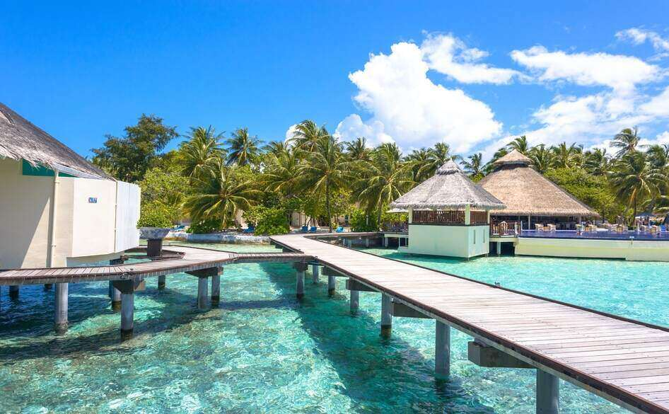
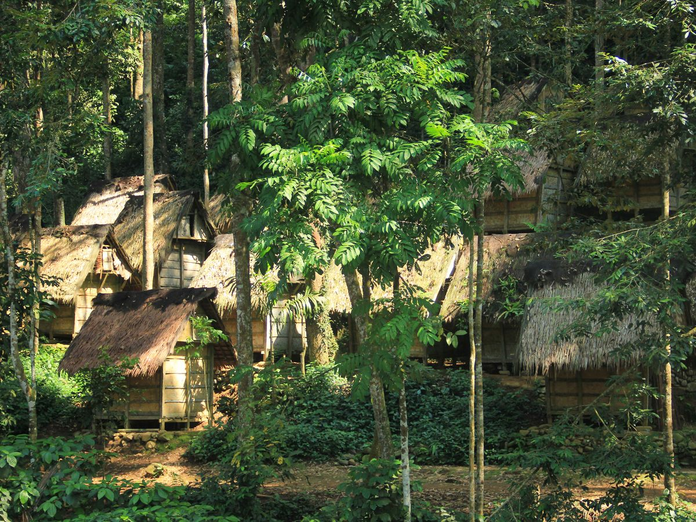
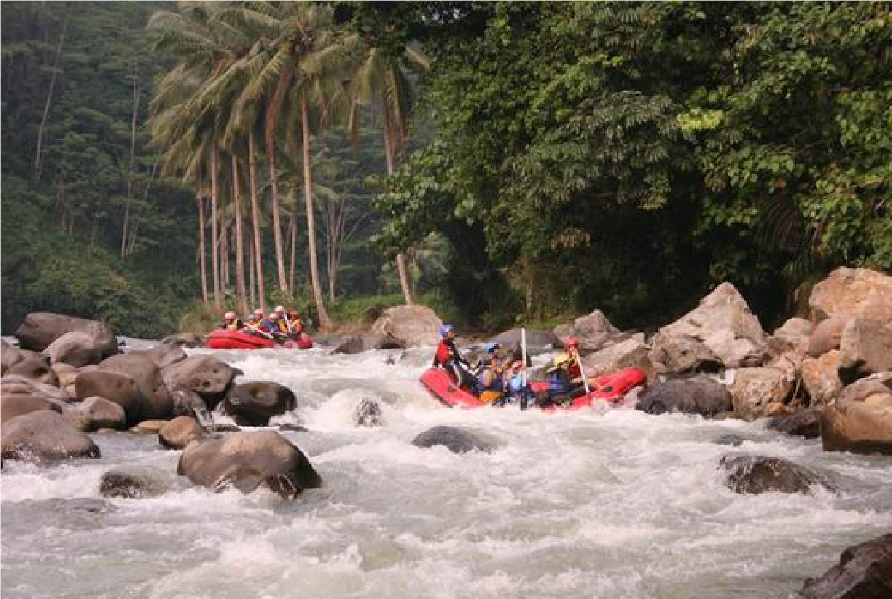

| Nama Tempat | Deskripsi | Gambar |
|---|---|---|
| Pantai Anyer | Pantai Anyer adalah salah satu tempat wisata di Banten yang paling ramai dan populer, terutama bagi penduduk Jakarta dan sekitarnya karena dekat dan terjangkau. Pantai Anyer adalah pantai yang memiliki pasir putih yang indah dan menarik. Aktifitas yang dapat anda lakukan di Pantai Anyer adalah berenang, bermain pasir, bermain olahraga air, berselancar, menyelam, menikmati pemandangan pantai, hingga menyantap hidangan laut yang nikmat di pinggir pantai. |

|
| Kampung Baduy | Kampung Baduy Kampung Baduy adalah kampungnya suku Baduy. Suku Baduy adalah suku yang masih kental adat sundanya, dan merupakan salah satu suku asli yang ada di Banten. Kampung Baduy yang berada di Kabupaten Lebak, Banten ini memiliki penduduk sekitar 8,000 jiwa dan terbagi menjadi 2, yaitu Baduy Dalam dan Baduy Luar. Suku Baduy Dalam adalah Suku Baduy yang menolak dunia luar, sedangkan Suku Baduy Luar adalah suku Baduy yang lebih terbuka pada dunia luar. |

|
| Arung Jeram Sungai Ciberang | Arung Jeram Sungai Ciberang Sungai Ciberang, Banten adalah salah satu lokasi arung jeram di sekitar Jakarta yang paling saya sukai. Hal ini dikarenakan kondisi pegunungan yang dilalui Sungai Ciberang masih sangat asri dan hijau, sehingga perjalanan menuju ke lokasi arung jeram sangatlah menyejukan hati. Begitu pula dengan sungainya, pemandangan yang di dapat ketika melakukan pengarungan sangatlah indah. |

|